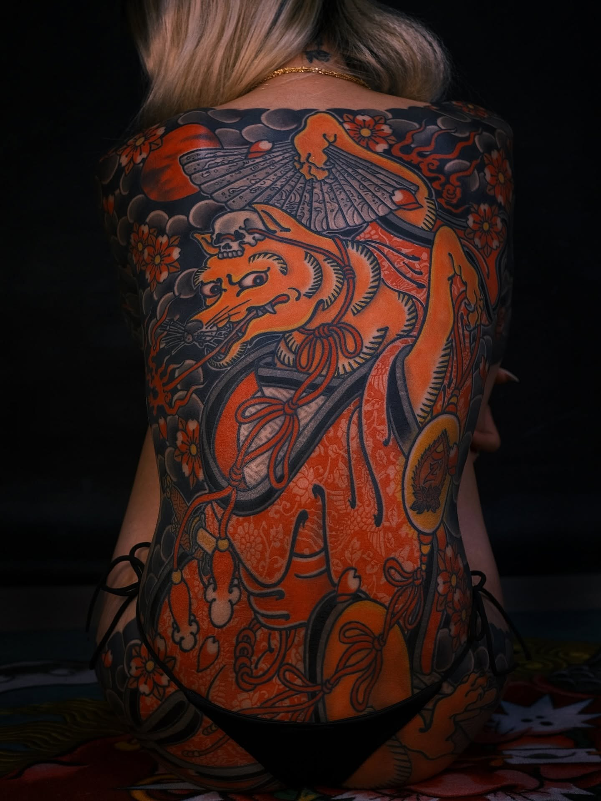
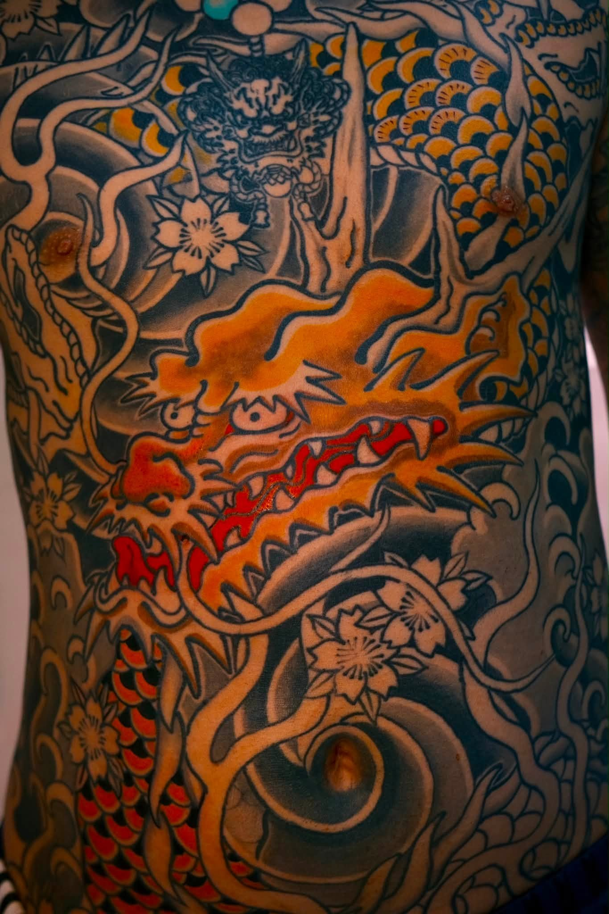
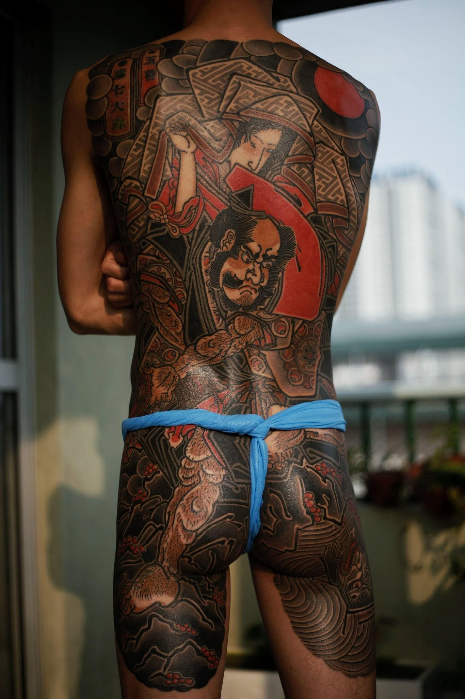
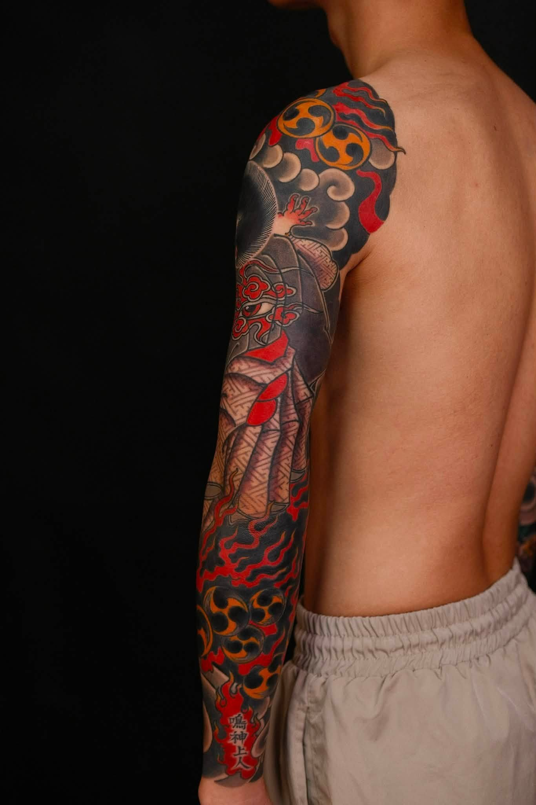
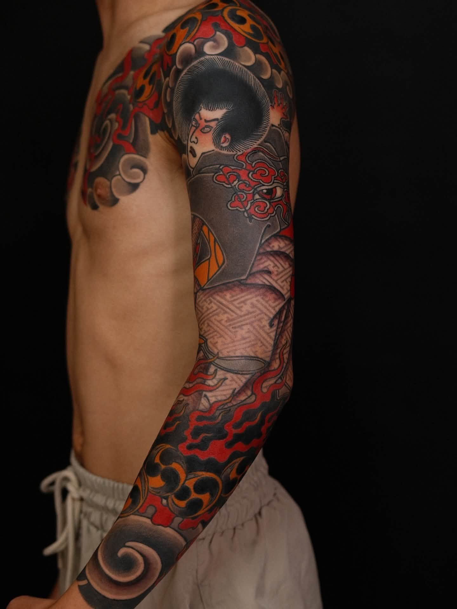
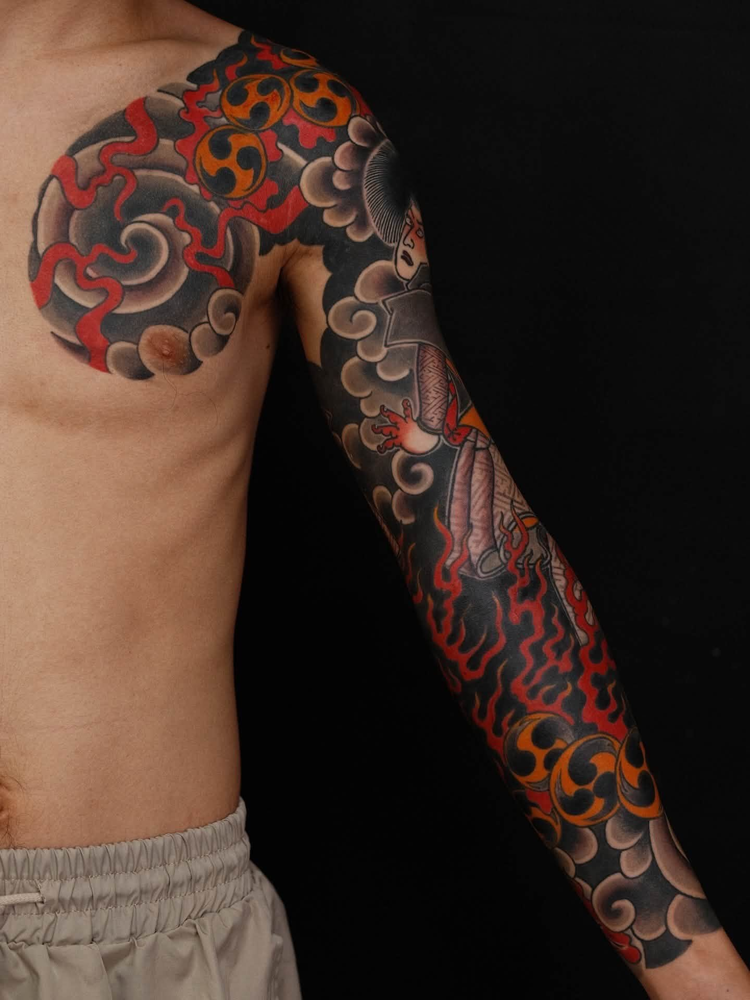

Nghệ sĩ thường trú
ORIENTAL.ZYN
01
Nghệ sĩ thường trú
Mười năm theo đuổi bố cục Nhật Bản truyền thống.
Oriental.Zyn tập trung vào những tác phẩm quy mô lớn được thiết kế theo chuyển động cơ thể. Backpiece, sleeve và các bố cục liền mạch được xây dựng bằng nền, nhịp điệu và sự cân bằng giữa chủ thể chính với khoảng thở.
Kinh nghiệm10 năm
StyleXăm Nhật Bản truyền thống
Địa điểmSài Gòn, Việt Nam
Tác phẩm chọn lọc
Những bố cục lớn được xây dựng cho cơ thể.





Bộ sleeve chọn lọc
Một bố cục liền mạch từ vai xuống cổ tay.





02
“Tác phẩm lớn phải rõ từ khoảng cách xa và vẫn sống động khi nhìn gần.”
Mười năm thực hành được thể hiện qua khả năng kiểm soát tỷ lệ, nhịp nền và các đoạn chuyển trên cơ thể.
SAIGON NEEDLE
Đặt lịch cùng Oriental.Zyn
Mọi yêu cầu đặt lịch đều được xử lý trực tiếp qua SAIGON NEEDLE.
Đặt lịch hẹn ↗